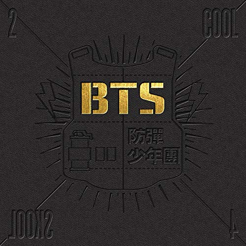
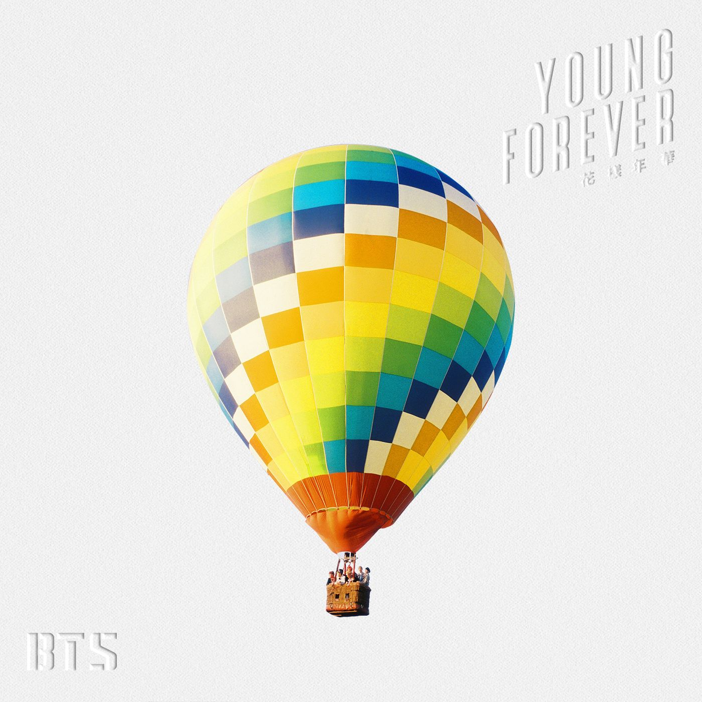

----------ʕ•́ᴥ•̀ʔっ Discografía ʕ•́ᴥ•̀ʔっ----------


Antes de enlistar estos álbumes, me gustaría dejar unos videos analizando esta discografía, ya que, BTS no subestima a su audiencia, brindando comebacks llenos de simbolismos y referencias inagotables, BTS representa como el kpop no trata a su audiencia como gente tonta, brindando un producto que no solo es entretenimiento, si no que tambuén es arte lleno de mensajes para aplicar a tu vida y crecer como persona, BTS no subestima a su audiencia, brindando calidad y profundidad.
Desde previo a 2013 BTS ha sido activo en su discografía año a año, produciendo junto a el Staff de productores de Big Hit Entertainment, los cuales han variado dependiendo de cada era y de la adquisición de nuevos productores y colaboraciones. Junto a la agencia, el grupo ha desarrollado una linea de coherencia que comprende diferentes etapas de la juventud y las facetas a las que esta debe enfrentarse.
2 COOL 4 SCHOOL

Información General
Duración: 18m con 45s
Canciones: 9
Lanzamiento: 12 de Junio de 2013
Género: Hip Hop, Rap, Dance pop, R&B, K-pop
Canción Título: No More Dream
2da Canción: We Are Bulletproof Pt.2
2 COOL 4 SKOOL es el primer single y material musical oficial lanzado por Big Hit Entertaniment para BTS, el grupo debutó como idols con este single en 2013, presentando la canción No More Dream como su canción principal. Este single, al ser llevado a la venta en Japón, fue promocionado junto al mini-álbum O!RUL8,2?, en un disco donde incluyen las caciones y MV de ambos CDs.
Descripción Oficial
El grupo de Hip Hop BTS lanza su single debut 2 COOL 4 SKOOL Canción debut de BTS "No More Dream"! Una nueva versión del Hip Hop de los 90s. Un nuevo, fuerte mensaje de la boyband Hip Hop BTS!. "What is your dream?" El grupo de Hip Hop BTS lanza su single debut 2 COOL 4 SKOOL. Anunciado como un single, el álbum presume de una duración de 27 minutos completos. Este es el producto de la firme convicción y pasión de BTS que los músicos de hip hop haran escuchar sus voces a través de sus álbumes. Cada miembro ha flexionado en su valor musical tomando parte en la creatividad de letras y música en cada canción del álbum. BTS ha repetido que "hip hop es una música genuina para contar una história propia", y de hecho los miembros rapean acerca de sus propias experiencias y emociones. No hay una discontinuidad entre las emociones y las letras de BTS. El álbum es una satisfacción en ambas calidad y cantidad.
ʕ•́ᴥ•̀ʔっʕ•́ᴥ•̀ʔっʕ•́ᴥ•̀ʔっʕ•́ᴥ•̀ʔっʕ•́ᴥ•̀ʔっʕ•́ᴥ•̀ʔっʕ•́ᴥ•̀ʔっʕ•́ᴥ•̀ʔっʕ•́ᴥ•̀ʔっʕ•́ᴥ•̀ʔっʕ•́ᴥ•̀ʔっʕ•́ᴥ•̀ʔっʕ•́ᴥ•̀ʔっʕ•́ᴥ•̀ʔっʕ•́ᴥ•̀ʔっʕ•́ᴥ•̀ʔっʕ•́ᴥ•̀ʔっʕ•́ᴥ•̀ʔっʕ•́ᴥ•̀ʔっʕ•́ᴥ•̀ʔっʕ•́ᴥ•̀ʔっʕ•́ᴥ•̀ʔっʕ•́ᴥ•̀ʔっʕ•́ᴥ•̀ʔ
O!RUL8,2?
Información General
Duración: 30m con 16s
Canciones: 10
Lanzamiento: 11 de septiempre de 2013
Género: Hip Hop, Dance pop
Canción Título: N.O
2da Canción: Attack on Bangtan
O!RUL8,2? (abreviatura de "Oh, Are You Late Too?") es el primer EP de la boy band surcoreana BTS. Fue publicado el 11 de septiembre de 2013 como la segunda parte de 2 Cool 4 Skool. El álbum consiste de diez canciones, teniendo a «N.O» como su sencillo principal. El grupo luego promovió «Attack on Bangtan», otro sencillo del álbum. En 2013, el EP se colocó en el puesto 55 en la lista de fin de año de GAON.
Descripción Oficial
El videoclip para el sencillo principal, «N.O» (acrónimo para "no offense"; lit. "sin ofensa"), fue publicado el 10 de septiembre, un día antes del lanzamiento del álbum. El videoclip muestra a los miembros vestidos como estudiantes, y revelándose a su profesor en lo cual parece ser un salón de clases distópico. La coreografía de la canción fue creada por Son Sungdeuk y el videoclip fue dirigido por ZanyBros. El álbum debutó en el puesto número 4 en la Gaon Album Chart y en la segunda semana de septiembre de 2013 ya había vendido más de 50,000 copias.
ʕ•́ᴥ•̀ʔっʕ•́ᴥ•̀ʔっʕ•́ᴥ•̀ʔっʕ•́ᴥ•̀ʔっʕ•́ᴥ•̀ʔっʕ•́ᴥ•̀ʔっʕ•́ᴥ•̀ʔっʕ•́ᴥ•̀ʔっʕ•́ᴥ•̀ʔっʕ•́ᴥ•̀ʔっʕ•́ᴥ•̀ʔっʕ•́ᴥ•̀ʔっʕ•́ᴥ•̀ʔっʕ•́ᴥ•̀ʔっʕ•́ᴥ•̀ʔっʕ•́ᴥ•̀ʔっʕ•́ᴥ•̀ʔっʕ•́ᴥ•̀ʔっʕ•́ᴥ•̀ʔっʕ•́ᴥ•̀ʔっʕ•́ᴥ•̀ʔっʕ•́ᴥ•̀ʔっʕ•́ᴥ•̀ʔっʕ•́ᴥ•̀ʔ
Skool Luv Affair
Información General
Duración: 35m con 29s
Canciones: 10
Lanzamiento: 12 de febrero de 2014
Género: Hip Hop, Dance pop, Rock
Canción Título: Boy In Luv
2da Canción: Just One Day
Skool Luv Affair es el segundo EP de la boy band surcoreana BTS. El álbum fue publicado el 12 de febrero de 2014 y contiene 10 canciones, siendo «Boy in Luv» su sencillo principal. En abril, el grupo promovió «Just One Day», otro sencillo del álbum. La edición especial del álbum, llamada Skool Luv Affair (Special Addition) fue publicada el 14 de mayo de 2014 con dos nuevas canciones: «Miss Right» y un remix de Slow Jam de la canción «I Like It». Skool Luv Affair se colocó en el vigésimo álbum mejor vendido en Corea del Sur en 2014.
Descripción Oficial
El 2 de febrero de 2014, Big Hit Entertainment publicó un tráiler del regreso de BTS en YouTube, preparando el siguiente álbum, Skool Luv Affair y varios eventos. El tráiler consistía de coloridas formaciones que aparecían en la pantalla, acompañado con un rap de Rap Monster. Tres días después, Big Hit publicó la lista de canciones oficial del álbum en su cuenta de Twitter. También publicaron la canción «Just One Day» para reproducir vía streaming de forma gratuita. Un día después, se lanzó la preview del álbum, revelando que «Boy in Luv» sería su sencillo principal. El grupo presentó un show por su regreso, interpretando «Boy in Luv» y «Jump».
ʕ•́ᴥ•̀ʔっʕ•́ᴥ•̀ʔっʕ•́ᴥ•̀ʔっʕ•́ᴥ•̀ʔっʕ•́ᴥ•̀ʔっʕ•́ᴥ•̀ʔっʕ•́ᴥ•̀ʔっʕ•́ᴥ•̀ʔっʕ•́ᴥ•̀ʔっʕ•́ᴥ•̀ʔっʕ•́ᴥ•̀ʔっʕ•́ᴥ•̀ʔっʕ•́ᴥ•̀ʔっʕ•́ᴥ•̀ʔっʕ•́ᴥ•̀ʔっʕ•́ᴥ•̀ʔっʕ•́ᴥ•̀ʔっʕ•́ᴥ•̀ʔっʕ•́ᴥ•̀ʔっʕ•́ᴥ•̀ʔっʕ•́ᴥ•̀ʔっʕ•́ᴥ•̀ʔっʕ•́ᴥ•̀ʔっʕ•́ᴥ•̀ʔ
Dark & Wild
Información General
Duración: 35m con 29s
Canciones: 10
Lanzamiento: 19 de agosto de 2014
Género: Hip Hop, Dance pop, R&B
Canción Título: Danger
2da Canción: War Of Hormone
Dark & Wild es el álbum de estudio debut de la boy band surcoreana BTS. El álbum fue publicado el 19 de agosto de 2014 y contiene 14 canciones, con «Danger» como su sencillo principal. La banda luego promovió «War of Hormone», otro sencillo del álbum. Dark & Wild se colocó en el puesto 14 de los álbumes más vendidos en la Gaon Álbum Chart, en 2014. El 5 de agosto de 2014, Big Hit Entertainment publicó en YouTube un video titulado 방탄소년단 'DARK & WILD' Comeback Trailer, el cual presentaba animaciones de escenas contrastantes de un paraíso en un bosque y estructuras blancas y negras abandonadas, acompañadas por un rap de Rap Monster. El 7 de agosto de 2014, la compañía publicó las primeras fotos teaser para el álbum de estudio de BTS, y luego publicó la lista de canciones en el Facebook y Twitter oficial del grupo. Confirmó que serían 14 canciones, con «Danger» circulada en rojo, indicando que sería el sencillo principal. El grupo presentó un show para su regreso el 19 de agosto, interpretando «Let me Know», «Danger», y «War of Hormone».
Descripción Oficial
El 5 de agosto de 2014, Big Hit Entertainment publicó en YouTube un video titulado 방탄소년단 'DARK & WILD' Comeback Trailer, el cual presentaba animaciones de escenas contrastantes de un paraíso en un bosque y estructuras blancas y negras abandonadas, acompañadas por un rap de Rap Monster. El 7 de agosto de 2014, la compañía publicó las primeras fotos teaser para el álbum de estudio de BTS, y luego publicó la lista de canciones en el Facebook y Twitter oficial del grupo. Confirmó que serían 14 canciones, con «Danger» circulada en rojo, indicando que sería el sencillo principal. El grupo presentó un show para su regreso el 19 de agosto, interpretando «Let me Know», «Danger», y «War of Hormone».
ʕ•́ᴥ•̀ʔっʕ•́ᴥ•̀ʔっʕ•́ᴥ•̀ʔっʕ•́ᴥ•̀ʔっʕ•́ᴥ•̀ʔっʕ•́ᴥ•̀ʔっʕ•́ᴥ•̀ʔっʕ•́ᴥ•̀ʔっʕ•́ᴥ•̀ʔっʕ•́ᴥ•̀ʔっʕ•́ᴥ•̀ʔっʕ•́ᴥ•̀ʔっʕ•́ᴥ•̀ʔっʕ•́ᴥ•̀ʔっʕ•́ᴥ•̀ʔっʕ•́ᴥ•̀ʔっʕ•́ᴥ•̀ʔっʕ•́ᴥ•̀ʔっʕ•́ᴥ•̀ʔっʕ•́ᴥ•̀ʔっʕ•́ᴥ•̀ʔっʕ•́ᴥ•̀ʔっʕ•́ᴥ•̀ʔっʕ•́ᴥ•̀ʔ
The Most Beautiful Moment in Life, Part 1

Información General
Duración: 31m con 27s
Canciones: 9
Lanzamiento: 29 de abril de 2015
Género: Hip-hop, rock alternativo, pop, house, EDM, dance pop
Canción Título: I Need You
2da Canción: Dope
The Most Beautiful Moment in Life, Part 1 (en hangul, 화양연화 Pt.1; romanización revisada del coreano, Hwayang-yeonhwa Pt.1) es el tercer EP de la boy band surcoreana BTS. El EP fue publicado el 29 de abril de 2015 y es primer álbum del proyecto de dos partes del grupo que se centra en la "Youth" (lit. Juventud). Se lanzaron dos versiones del álbum los cuales contienen nueve canciones con el sencillo principal «I Need U» y, en junio, la banda promovió «Dope», otra canción del álbum. En Corea del Sur, The Most Beautiful Moment in Life, Part 1 se colocó en el puesto número 6 de los álbumes más vendidos de 2015 en la Gaon Chart.
Descripción Oficial
Este es el primer álbum en el cual todos los miembros participaron o en la producción, la composición o la escritura de las letras. A pesar del nombre del álbum expresando "el momento más hermoso de la vida", la banda también quería expresar las ansiedades e inseguridades que la juventud puede traer. En respuesta a la duración del álbum, RM y Suga explicaron que el grupo piensa cada álbum como un LP, ya que lo que los miembros quieren hacer es "contar un montón de buenas historias".
ʕ•́ᴥ•̀ʔっʕ•́ᴥ•̀ʔっʕ•́ᴥ•̀ʔっʕ•́ᴥ•̀ʔっʕ•́ᴥ•̀ʔっʕ•́ᴥ•̀ʔっʕ•́ᴥ•̀ʔっʕ•́ᴥ•̀ʔっʕ•́ᴥ•̀ʔっʕ•́ᴥ•̀ʔっʕ•́ᴥ•̀ʔっʕ•́ᴥ•̀ʔっʕ•́ᴥ•̀ʔっʕ•́ᴥ•̀ʔっʕ•́ᴥ•̀ʔっʕ•́ᴥ•̀ʔっʕ•́ᴥ•̀ʔっʕ•́ᴥ•̀ʔっʕ•́ᴥ•̀ʔっʕ•́ᴥ•̀ʔっʕ•́ᴥ•̀ʔっʕ•́ᴥ•̀ʔっʕ•́ᴥ•̀ʔっʕ•́ᴥ•̀ʔ
The Most Beautiful Moment in Life, Part 2
Información General
Duración: 34m con 21s
Canciones: 9
Lanzamiento: 30 de noviembre de 2015
Género: Hip-hop, rock alternativo, pop, house, EDM, dance pop
Canción Título: Run
The Most Beautiful Moment In Life, Part 2 (en hangul, 화양연화 Pt.2; romanización revisada del coreano, Hwayang-yeonhwa Pt.2) es el cuarto EP del grupo de hip-hop surcoreano BTS y la segunda parte de la trilogía sobre la juventud. El álbum fue publicado en Corea del Sur el 30 de noviembre de 2015 en dos versiones diferentes, azul y rosa, y contenía nueve temas. La versión japonesa se publicó el 6 de julio de 2016. Se han vendido más de 565,826 copias en Corea del Sur y más de 16,046 copias en Japón. Por otro lado, el álbum consiguió en número 1 en la lista Gaon de Corea del Sur, el número 15 en la lista Oricon japonesa y el 171 en la lista Billboard 200. Además, el disco consiguió entrar en el número 4 en la lista Billboard de los mejores álbumes de k-pop de 2015.5
Descripción Oficial
Se publicó un vídeo musical del tema «Run» el mismo día de la salida del álbum, aunque el 8 de septiembre ya se había publicado el vídeo On Stage: Prologue como anticipo del álbum y de la gira de promoción, 화양연화 On Stage, que tuvo paradas en Corea del Sur y Japón. El debut televisivo del sencillo RUN se produjo el 2 de diciembre de 2015 en los Mnet Asian Music Awards y la promoción en programas de música comenzó el 4 de diciembre en KBS Music Bank. En total, RUN ganó cinco premios en programas de música y estuvo nominado otra vez más.8 El sencillo «Run (Japanese Ver.)» se puso a la venta en el mercado japonés el 15 de marzo de 2016 y ha vendido hasta el momento más de 131,489 copias, consiguiendo la certificación de oro de RIAJ en marzo de 2016. El vídeo musical del tema se publicó el 11 de marzo de 2016.
ʕ•́ᴥ•̀ʔっʕ•́ᴥ•̀ʔっʕ•́ᴥ•̀ʔっʕ•́ᴥ•̀ʔっʕ•́ᴥ•̀ʔっʕ•́ᴥ•̀ʔっʕ•́ᴥ•̀ʔっʕ•́ᴥ•̀ʔっʕ•́ᴥ•̀ʔっʕ•́ᴥ•̀ʔっʕ•́ᴥ•̀ʔっʕ•́ᴥ•̀ʔっʕ•́ᴥ•̀ʔっʕ•́ᴥ•̀ʔっʕ•́ᴥ•̀ʔっʕ•́ᴥ•̀ʔっʕ•́ᴥ•̀ʔっʕ•́ᴥ•̀ʔっʕ•́ᴥ•̀ʔっʕ•́ᴥ•̀ʔっʕ•́ᴥ•̀ʔっʕ•́ᴥ•̀ʔっʕ•́ᴥ•̀ʔっʕ•́ᴥ•̀ʔ
The Most Beautiful Moment In Life: Young Forever

Información General
Duración: 1hm con 36m y 29s
Canciones: 23
Lanzamiento: 2 de mayo de 2016
Género: Hip-hop, rock alternativo, pop, house, EDM, dance pop
Canción Título: Young Forever
2da Canción: Fire
The Most Beautiful Moment in Life: Young Forever (en hangul, 화양연화 Young Forever; romanización revisada del coreano, Hwayang-yeonhwa Young Forever) es el primer álbum recopilatorio del grupo de hip-hop surcoreano BTS. El álbum contiene un total de 23 temas, doce de ellos pertenecientes a las dos entregas anteriores de The Most Beautiful Moment in Life y fue publicado en Corea del Sur el 2 de mayo de 2016 y en Taiwán el 1 de junio de 2016. Se vendieron 310,243 copias en Corea del Sur en su primer mes en el mercado y más de 140,000 en China. Por otro lado, el álbum consiguió llegar al número 1 en listas de Corea del Sur y Taiwán, al número 7 en Japón y entró en el 107 en la lista Billboard 200.
Descripción Oficial
Se publicaron vídeos musicales para tres de los temas del álbum: «Epilogue: Young Forever», «Save Me» y para el sencillo «Fire», que fue el vídeo k-pop más visto en el mundo durante el mes de mayo de 2016. La promoción del álbum en programas de música comenzó el 12 de mayo en M! Countdown y duró solamente una semana.2 El 7 de mayo de 2016 se celebró el primero de dos conciertos en el Arena de Gimnasia Olímpica de Seúl que dieron comienzo a la gira asiática 2016 BTS Live The Most Beautiful Moment in Life On Stage: Epilogue que sirvió para promocionar el disco. La gira tuvo paradas en Taiwán, China, Japón, Filipinas y Tailandia y reunió a 144 000 espectadores. El álbum fue galardonado con el premio daesang al álbum del año en los Melon Music Awards de 2016 y el sencillo promocional «Fire» ganó tres premios en programas de música y estuvo nominado otras tres veces.
ʕ•́ᴥ•̀ʔっʕ•́ᴥ•̀ʔっʕ•́ᴥ•̀ʔっʕ•́ᴥ•̀ʔっʕ•́ᴥ•̀ʔっʕ•́ᴥ•̀ʔっʕ•́ᴥ•̀ʔっʕ•́ᴥ•̀ʔっʕ•́ᴥ•̀ʔっʕ•́ᴥ•̀ʔっʕ•́ᴥ•̀ʔっʕ•́ᴥ•̀ʔっʕ•́ᴥ•̀ʔっʕ•́ᴥ•̀ʔっʕ•́ᴥ•̀ʔっʕ•́ᴥ•̀ʔっʕ•́ᴥ•̀ʔっʕ•́ᴥ•̀ʔっʕ•́ᴥ•̀ʔっʕ•́ᴥ•̀ʔっʕ•́ᴥ•̀ʔっʕ•́ᴥ•̀ʔっʕ•́ᴥ•̀ʔっʕ•́ᴥ•̀ʔ
WINGS

Información General
Duración: 53m con 34s
Canciones: 15
Lanzamiento: 10 de octubre de 2016
Género: Hip Hop, Dance pop, R&B, EDM
Canción Título: Blood, Sweat and Tears
2da Canción: Not Today
Wings es el segundo álbum de estudio del grupo surcoreano BTS. Fue publicado en Corea del Sur el 10 de octubre de 2016 por el sello Big Hit Entertainment en cuatro versiones diferentes —W, I, N y G— con un total de quince temas, siete de los cuales eran canciones en solitario de cada uno de los miembros del grupo. Fue lanzado en Japón el 12 de octubre, en Malasia el 17 de octubre y en Taiwán el 4 de noviembre de 2016. Una reedición del disco, llamada You Never Walk Alone, salió a la venta el 13 de febrero de 2017, en la que se incluyeron tres canciones nuevas.
Descripción Oficial
El 26 de septiembre se publicó en la aplicación V Live el tráiler del álbum, «Boy Meets Evil», en el que aparecía J-Hope bailando en un edificio abandonado. Ese mismo día se anunció que la fecha de salida de este sería el 10 de octubre.29 Entre el 29 de septiembre y el 4 de octubre se publicaron las imágenes promocionales,30 en tanto que el 6 de octubre se publicó la lista completa de canciones, un total de 15, y que incluía todos los temas que aparecían en los cortos. Por último, el 7 de octubre apareció el avance del vídeo musical de «Blood Sweat & Tears». El grupo realizó un programa en directo en V Live el día 9 de octubre como preparación al lanzamiento del álbum, en el que habló de las canciones en solitario del mismo. Al día siguiente llevó a cabo una rueda de prensa en la que los miembros respondieron preguntas sobre el concepto del disco.
ʕ•́ᴥ•̀ʔっʕ•́ᴥ•̀ʔっʕ•́ᴥ•̀ʔっʕ•́ᴥ•̀ʔっʕ•́ᴥ•̀ʔっʕ•́ᴥ•̀ʔっʕ•́ᴥ•̀ʔっʕ•́ᴥ•̀ʔっʕ•́ᴥ•̀ʔっʕ•́ᴥ•̀ʔっʕ•́ᴥ•̀ʔっʕ•́ᴥ•̀ʔっʕ•́ᴥ•̀ʔっʕ•́ᴥ•̀ʔっʕ•́ᴥ•̀ʔっʕ•́ᴥ•̀ʔっʕ•́ᴥ•̀ʔっʕ•́ᴥ•̀ʔっʕ•́ᴥ•̀ʔっʕ•́ᴥ•̀ʔっʕ•́ᴥ•̀ʔっʕ•́ᴥ•̀ʔっʕ•́ᴥ•̀ʔっʕ•́ᴥ•̀ʔ
You Never Walk Alone
Información General
Duración: 1h con 6m y 18s
Canciones: 19
Lanzamiento: 13 de febrero de 2017
Género: Hip Hop, Dance pop, R&B, EDM
Canción Título: Spring Day
2da Canción: Not Today
You Never Walk Alone incluyó tres canciones nuevas y una versión completa de «Interlude: Wings», que pasó a llamarse «Outro: Wings». A lo largo del tema «Spring Day», que es una canción de «hip-hop alternativo fusionada con instrumentales de rock y sintetizadores EDM», se usa una metáfora respecto a las estaciones para describir la pérdida o ausencia de un ser querido, con tonos de culpa y nostalgia pero también de esperanza. Mientras que con «Not Today», Herman Tamar de la revista Billboard señala que se asemeja a sus antiguas canciones con conceptos antisistema, al ser un llamado a «todos los desvalidos del mundo» para unirse y seguir luchando ante una cruda y difícil realidad. En este tema el grupo también hace alusión a «romper el techo de cristal».
Descripción Oficial
You Never Walk Alone recibió más de 700 000 órdenes de copias físicas durante su preventa, la cantidad más alta registrada en la primera mitad de 2017. Debutó en el número 61 en la Billboard 200, de modo que con este logro BTS extendió su récord como el único artista coreano con más entradas en la lista. Asimismo, encabezó la Billboard World Albums, por lo que fue su tercer número 1 en esta. El disco también tuvo una buena recepción en Asia. En China vendió 144 400 copias en la primera semana en QQ Music y alcanzó la primera posición de la lista de álbumes con mayor número de ventas. Mientras que en Corea del Sur se ubicó en el número 1 de la Gaon Albums Chart con 373 750 copias vendidas en una semana; con ello el grupo rompió el récord previamente impuesto por Wings. Además, el álbum lideró la lista mensual de Gaon en febrero al tener el más alto número de ventas físicas en la primera mitad de 2017.
ʕ•́ᴥ•̀ʔっʕ•́ᴥ•̀ʔっʕ•́ᴥ•̀ʔっʕ•́ᴥ•̀ʔっʕ•́ᴥ•̀ʔっʕ•́ᴥ•̀ʔっʕ•́ᴥ•̀ʔっʕ•́ᴥ•̀ʔっʕ•́ᴥ•̀ʔっʕ•́ᴥ•̀ʔっʕ•́ᴥ•̀ʔっʕ•́ᴥ•̀ʔっʕ•́ᴥ•̀ʔっʕ•́ᴥ•̀ʔっʕ•́ᴥ•̀ʔっʕ•́ᴥ•̀ʔっʕ•́ᴥ•̀ʔっʕ•́ᴥ•̀ʔっʕ•́ᴥ•̀ʔっʕ•́ᴥ•̀ʔっʕ•́ᴥ•̀ʔっʕ•́ᴥ•̀ʔっʕ•́ᴥ•̀ʔっʕ•́ᴥ•̀ʔ
Love Yourself: Her
Información General
Duración: 43m con 29s
Canciones: 11
Lanzamiento: 18 de septiembre de 2017
Género: Hip Hop, Dance pop, EDM
Canción Título: DNA
2da Canción: Mic Drop
Love Yourself 承 'Her' (estilizado como LOVE YOURSELF 承 'Her') es el quinto EP de la boy band surcoreana BTS. El EP fue publicado el 18 de septiembre de 2017 por Big Hit Entertainment. Fueron publicadas cuatro versiones —L, O, V y E—, las cuales contienen nueve canciones con «DNA» como su sencillo principal, además de dos pistas ocultas que sólo están disponibles en el álbum físico.
Descripción Oficial
Durante el período del 25 al 31 de agosto, LOEN Entertainment, responsable de la distribución de los lanzamientos físicos de BTS, alcanzó un total de 1,051,546 precompras del álbum. Esto hizo a BTS el primer grupo de K-pop en alcanzar más de un millón de preventas. El álbum encabezó la lista Top Albums Chart de iTunes en 73 países el primer día de su lanzamiento, incluyendo Estados Unidos, Reino Unido, Alemania, Australia, Canadá, Hong Kong, Malasia y Japón – el resultado más alto alcanzado por un artista de K-pop. Además, su sencillo principal «DNA» también encabezó la Top Song Chart de iTunes en 29 países. El videoclip de «DNA» rompió el récord al video de K-pop en llegar más rápido a las diez millones de visitas, ocho horas después de su lanzamiento. A las 24 horas de su lanzamiento, el videoclip de «DNA» había alcanzado las 20.9 millones de visitas, convirtiéndose en el primer videoclip de un grupo de K-pop en alcanzar las 20 millones de visitas en menos de 24 horas.
ʕ•́ᴥ•̀ʔっʕ•́ᴥ•̀ʔっʕ•́ᴥ•̀ʔっʕ•́ᴥ•̀ʔっʕ•́ᴥ•̀ʔっʕ•́ᴥ•̀ʔっʕ•́ᴥ•̀ʔっʕ•́ᴥ•̀ʔっʕ•́ᴥ•̀ʔっʕ•́ᴥ•̀ʔっʕ•́ᴥ•̀ʔっʕ•́ᴥ•̀ʔっʕ•́ᴥ•̀ʔっʕ•́ᴥ•̀ʔっʕ•́ᴥ•̀ʔっʕ•́ᴥ•̀ʔっʕ•́ᴥ•̀ʔっʕ•́ᴥ•̀ʔっʕ•́ᴥ•̀ʔっʕ•́ᴥ•̀ʔっʕ•́ᴥ•̀ʔっʕ•́ᴥ•̀ʔっʕ•́ᴥ•̀ʔっʕ•́ᴥ•̀ʔ
Love Yourself: Tear
Información General
Duración: 43m con 58s
Canciones: 10
Lanzamiento: 18 de mayo de 2018
Género: Hip-hop,R&B, Techno, Electropop, Alternative Rock, EDM
Canción Título: Fake Love
2da Canción: Anpanman
Love Yourself 轉 'Tear' (estilizado como LOVE YOURSELF 轉 'Tear') es el tercer álbum de estudio del grupo surcoreano BTS. Fue lanzado el 18 de mayo de 2018 en cuatro versiones diferentes —Y, O, U y R— y cuenta con 11 canciones. El álbum conceptual explora temas relacionados al dolor y la tristeza. El 27 de mayo de 2018, el disco debutó en el número 1 de la Billboard 200 al vender 135 000 unidades, y con ello se convirtió en el álbum mejor posicionado de BTS en el mercado occidental, así como el primer álbum de un grupo sur-coreano en encabezar las listas de álbumes de Estados Unidos y el primero de un artista asiático en alcanzar las posiciones más altas.
Descripción Oficial
El 14 de mayo, Big Hit lanzó el primer video promocional de «Fake Love», el sencillo principal del álbum, a través de su cuenta oficial de Youtube. Varios medios describieron a la canción como «una pista de género emo, hip hop con un sonido de guitarra rock grunge y un ritmo de trap groovy que crea una extraña melancolía», con letras que «representan claramente el tema del álbum al darse cuenta de que un amor que parecía ser predestinado era en realidad una mentira». Los Billboard Music Awards lanzaron un clip del video musical el 15 de mayo, el cual mostró una parte de la nueva coreografía y una parte del coro de la canción. Big Hit publicó el segundo video promocional dos días después. El 18 de mayo se lanzó el álbum junto con el video musical de «Fake Love».24 Por otro lado, el grupo también tuvo una conferencia de prensa sobre el álbum en el Lotte Hotel en Jung-gu, Seúl el 24 de mayo de 2018.
ʕ•́ᴥ•̀ʔっʕ•́ᴥ•̀ʔっʕ•́ᴥ•̀ʔっʕ•́ᴥ•̀ʔっʕ•́ᴥ•̀ʔっʕ•́ᴥ•̀ʔっʕ•́ᴥ•̀ʔっʕ•́ᴥ•̀ʔっʕ•́ᴥ•̀ʔっʕ•́ᴥ•̀ʔっʕ•́ᴥ•̀ʔっʕ•́ᴥ•̀ʔっʕ•́ᴥ•̀ʔっʕ•́ᴥ•̀ʔっʕ•́ᴥ•̀ʔっʕ•́ᴥ•̀ʔっʕ•́ᴥ•̀ʔっʕ•́ᴥ•̀ʔっʕ•́ᴥ•̀ʔっʕ•́ᴥ•̀ʔっʕ•́ᴥ•̀ʔっʕ•́ᴥ•̀ʔっʕ•́ᴥ•̀ʔっʕ•́ᴥ•̀ʔ
Love Yourself: Answer

Información General
Duración: 1h con 44m y 11s
Canciones: 26
Lanzamiento: 24 de agosto de 2018
Género: Pop, Hip Hop, K-pop
Canción Título: IDOL
2da Canción: I'm Fine
Love Yourself 結 'Answer' (estilizado como LOVE YOURSELF 結 'Answer') es el tercer álbum recopilatorio de la boy band surcoreana BTS. El álbum fue lanzado el 24 de agosto de 2018 por Big Hit Entertainment y está disponible en cuatro versiones diferentes: S, E, L y F.3 El álbum contiene veinticinco canciones, incluyendo siete nuevas. La mayoría de los temas son de Love Yourself: Her, y Love Yourself: Tear, así como algunos remixes.
Descripción Oficial
Answer se anunció por primera vez el 16 de julio de 2018. El álbum fue diseñado como el final de la serie Love Yourself, que conectó el argumento de la historia del cortometraje Love Yourself: Wonder, el EP Love Yourself: Her, y el álbum de estudio Love Yourself: Tear. El 6 de agosto, Big Hit Entertainment lanzó una nota sobre Most Beautiful Moment in Life, parte de una serie de notas ficticias pertenecientes al concepto de álbumes de BTS, comenzando con el EP The Most Beautiful Moment in Life, Part 1 (2015). La nota, escrita por Jin, integrante del grupo, habló sobre cómo encontró un cuaderno escrito por su padre en la historia, donde redactaba los fracasos del mismo. Tres días más tarde, el 9 de agosto, se lanzó el avance del álbum, con una nueva canción titulada «Epiphany». La canción, descrita como una «melodía de pop-rock», fue interpretada por Jin, y habla de encontrar el amor propio. El tráiler fue dirigido por Yong-seok Choi (Lumpens),7 y retrata varias versiones de Jin en una habitación, contando la historia de un viaje personal. Philip Merrill, de la Academia de Grabación, describió el vídeo como una «sensación de ir hacia atrás y hacia adelante, a través del tiempo y a través de diferentes versiones de uno mismo». Discutiendo sobre el trabajo de Jin, Hong Hye-min de The Korea Times declaró que fue tan bien actuado y emotivo, con la «voz triste y libre de Jin».
ʕ•́ᴥ•̀ʔっʕ•́ᴥ•̀ʔっʕ•́ᴥ•̀ʔっʕ•́ᴥ•̀ʔっʕ•́ᴥ•̀ʔっʕ•́ᴥ•̀ʔっʕ•́ᴥ•̀ʔっʕ•́ᴥ•̀ʔっʕ•́ᴥ•̀ʔっʕ•́ᴥ•̀ʔっʕ•́ᴥ•̀ʔっʕ•́ᴥ•̀ʔっʕ•́ᴥ•̀ʔっʕ•́ᴥ•̀ʔっʕ•́ᴥ•̀ʔっʕ•́ᴥ•̀ʔっʕ•́ᴥ•̀ʔっʕ•́ᴥ•̀ʔっʕ•́ᴥ•̀ʔっʕ•́ᴥ•̀ʔっʕ•́ᴥ•̀ʔっʕ•́ᴥ•̀ʔっʕ•́ᴥ•̀ʔっʕ•́ᴥ•̀ʔ
Map Of The Soul: Persona

Información General
Duración: 26m con 5s
Canciones: 7
Lanzamiento: 12 de abril de 2019
Género: Pop, R&B, Pop Rock
Canción Título: Boy With Luv
2da Canción: Home
Map of the Soul: Persona (estilizado como MAP OF THE SOUL: PERSONA) es el sexto EP del grupo surcoreano BTS. Fue lanzado el 12 de abril de 2019 por Big Hit Entertainment en cuatro versiones diferentes, siendo el primero de una serie de álbumes. El álbum profundiza las temáticas tratadas por la banda en la serie Love Yourself (Her, Tear y Answer), como el amor y el autodescubrimiento.6 Para el desarrollo del concepto el grupo tomó como inspiración las teorías sobre la psique humana desarrolladas por Carl Jung, específicamente sobre el arquetipo persona,7 además su título hace alusión al libro El Mapa del Alma según Jung de Murray Stein, en el que se condensa el conjunto de trabajos e ideas de Jung.
Descripción Oficial
En Reino Unido el disco alcanzó la máxima posición en la lista UK Albums Chart al vender 26 500 unidades equivalentes a álbumes, de las cuales el 68 % (aproximadamente 18 020 copias) provinó de ventas puras. Las ventas a mitad de semana del EP fueron superiores a los tres lanzamientos previos de BTS combinados, incluido su álbum de 2018 Love Yourself: Tear, el único otro disco de BTS que alcanzó el top diez en el Reino Unido. En tanto que en Estados Unidos, Map of the Soul: Persona lideró la lista Billboard 200 con 232 000 unidades vendidas (196 000 ventas puras), de manera que fue el álbum con mayor número de ventas del grupo en el país. También es el tercer álbum número 1 de BTS en apenas 11 meses, lo que lo convirtió en la primera banda en alcanzar la primera posición en la lista en menos de un año, desde The Beatles en 1995-96. Además, el grupo fue el segundo acto en tener 3 álbumes número 1 en el menor tiempo desde la creación de la Billboard 200.
ʕ•́ᴥ•̀ʔっʕ•́ᴥ•̀ʔっʕ•́ᴥ•̀ʔっʕ•́ᴥ•̀ʔっʕ•́ᴥ•̀ʔっʕ•́ᴥ•̀ʔっʕ•́ᴥ•̀ʔっʕ•́ᴥ•̀ʔっʕ•́ᴥ•̀ʔっʕ•́ᴥ•̀ʔっʕ•́ᴥ•̀ʔっʕ•́ᴥ•̀ʔっʕ•́ᴥ•̀ʔっʕ•́ᴥ•̀ʔっʕ•́ᴥ•̀ʔっʕ•́ᴥ•̀ʔっʕ•́ᴥ•̀ʔっʕ•́ᴥ•̀ʔっʕ•́ᴥ•̀ʔっʕ•́ᴥ•̀ʔっʕ•́ᴥ•̀ʔっʕ•́ᴥ•̀ʔっʕ•́ᴥ•̀ʔっʕ•́ᴥ•̀ʔ
Map Of The Soul: 7

Información General
Duración: 1h con 14m y 52s
Canciones: 20
Lanzamiento: 21 de febrero de 2020
Género: Pop
Canción Título: Black Swan
2da Canción: ON
El grupo anunció el 7 de enero de 2020 que lanzaría un nuevo álbum y que la pre-venta iniciaría el 9 de enero. El 8 de enero, Big Hit Entertainment reveló que la publicación del disco consistiría en 4 fases, que empezarían desde el 10 de enero hasta el 28 de febrero. Como parte de la primera fase se publicó el tráiler del disco con la canción «Interlude: Shadow», interpretada por Suga, en tanto que el primer sencillo del álbum, «Black Swan», se lanzó el el 17 de enero junto con un «art film» que incluye una coreografía interpretada por el grupo eslovaco MN Dance Company.
Descripción Oficial
Map of the Soul: 7 tuvo una recepción favorable por parte de los críticos de música. De acuerdo con Metacritic, el disco obtuvo un total de 86 puntos sobre 100. Neil Z. Yeung de AllMusic le dio al álbum cuatro estrellas de cinco. En su reseña comentó que con este álbum BTS expande los conceptos de su EP Map of the Soul: Persona y que «con una perspectiva desde la fama y las relaciones, el grupo se embarca en una travesía psicoemocional que explora ideas sobre la identidad y el sí-mismo». Según Dreamus, distribuidor de Map of the Soul: 7, las órdenes del álbum superaron los 3.42 millones de copias en los primeros seis días del periodo de preventas, y con ello superó el récord anterior del grupo, que obtuvo 2.68 millones de órdenes con Map of the Soul: Persona. El 6 de febrero, Forbes reportó que el álbum había sobrepasado 4 millones de órdenes a nivel mundial.